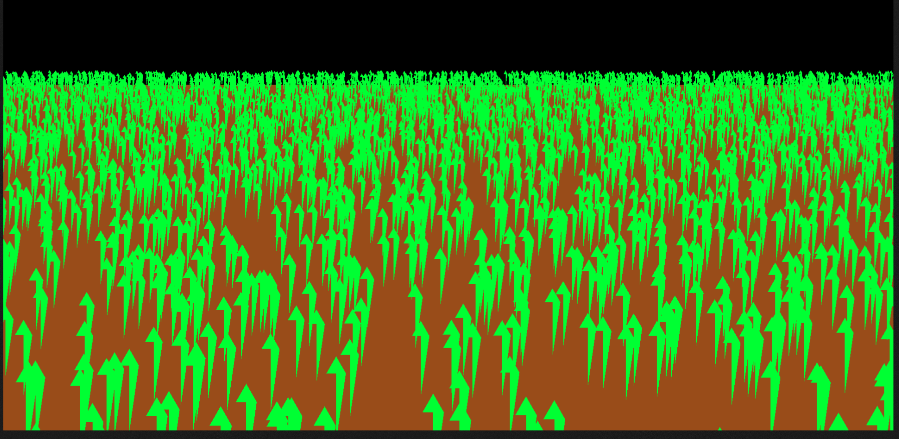
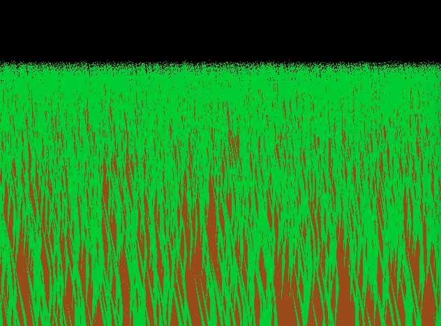
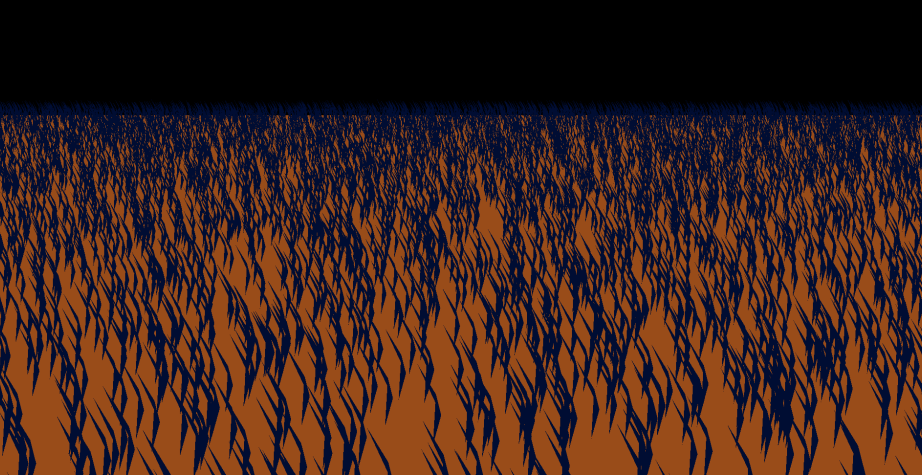
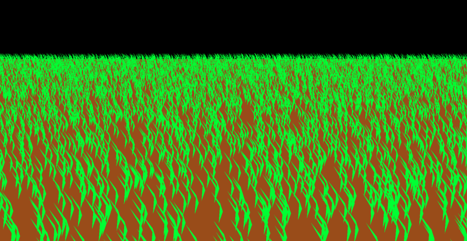
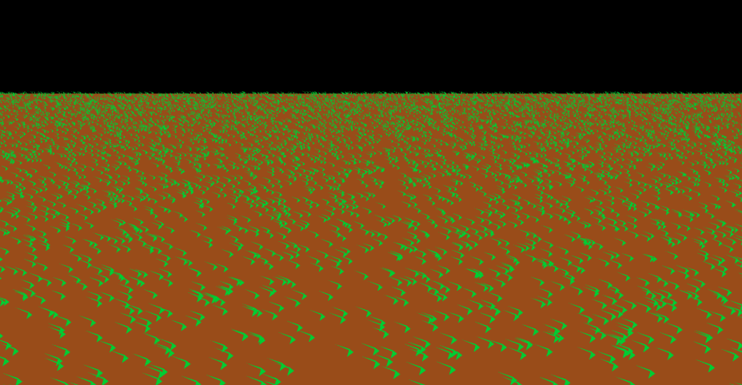
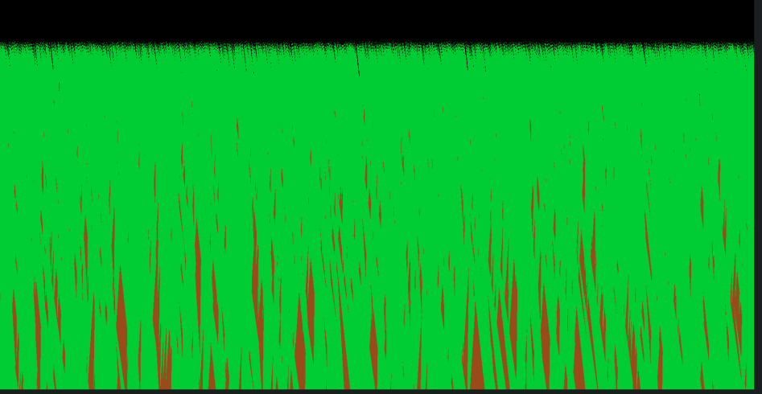

Last edited:
Hello,
In this blog post, I will explain how I do the grass rendering in opengl and my experiences, problems and solutions for that.
First of all, I will explain the basic idea of grass rendering. Grass rendering is a technique used to simulate grass in a 3D environment. It is used in many games and applications to create realistic outdoor environments. The basic idea is to create a large number of grass blades and render them in a way that looks natural.
To do that, first of all I rendered a flat surface and above of them some grass pieces. In the beginning it was hard to render realistic grass without any object file.
As it can be seen in figure that, because of the points coordinates which I declared makes the grass not good.
In the next step, I change some values in geometric shader and added options to change color and height of the grass
    In the final step, I added a wind effect to the grass. To do that, I used a noise texture to create a random wind effect. I also added a time variable to the shader to make the wind effect change over time. The result is a realistic grass simulation that looks natural and dynamic.
As a performance, I got 750 fps with a i5 9300h and Nvidia GTX1650 mobile.
In this homework, I understand how to use geometry shader and how can I render with a curve.